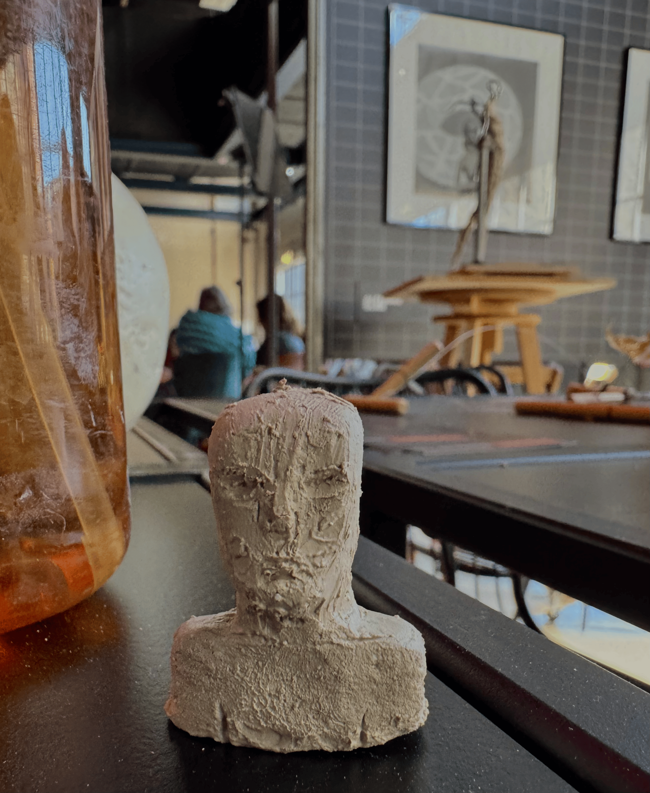
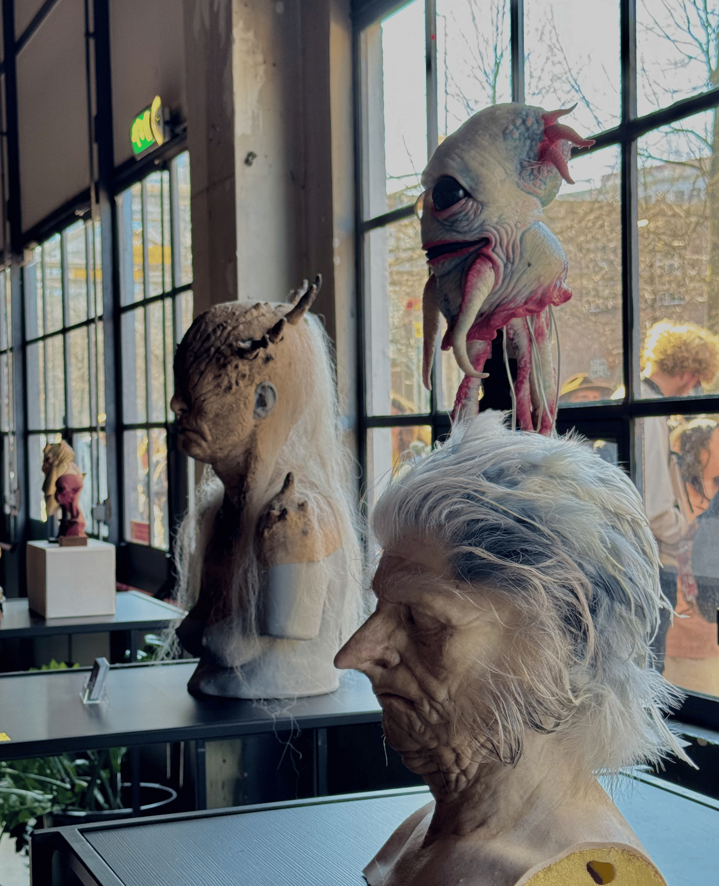
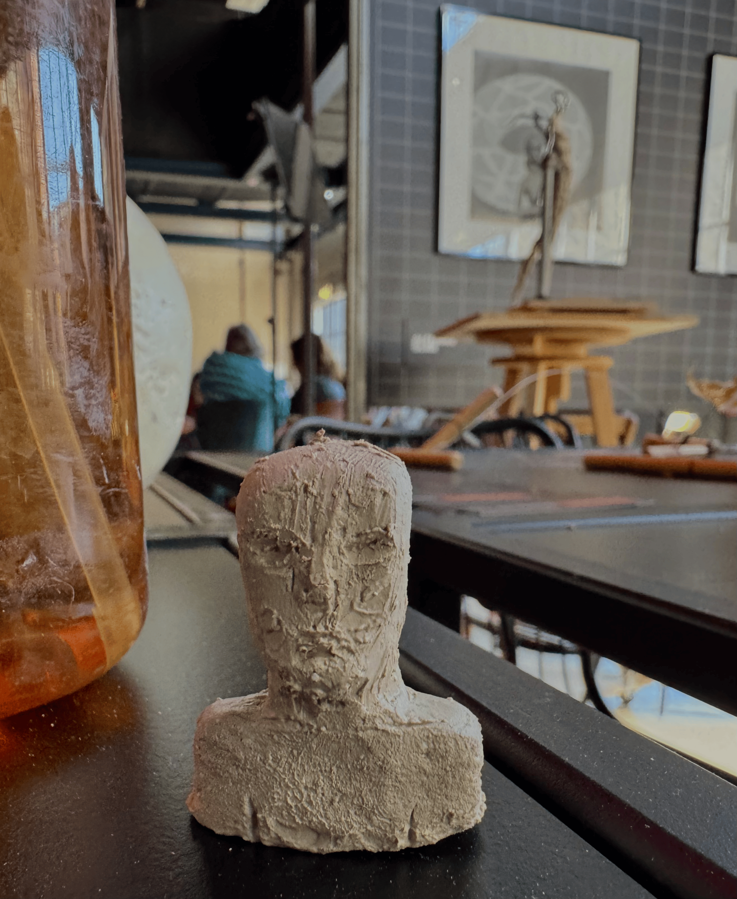
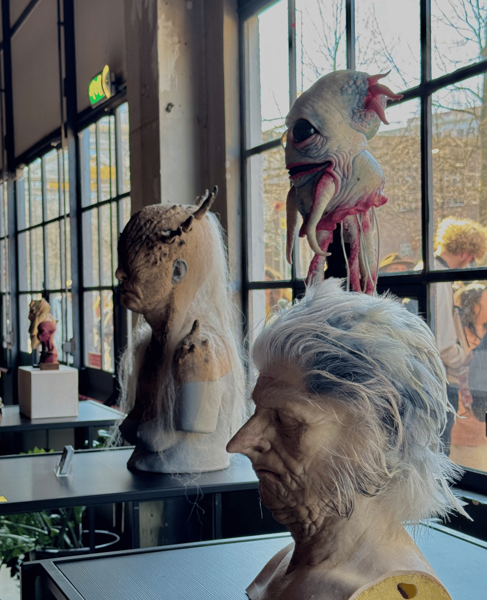

You are aware of your own strengths and weaknesses, both in the field of ICT and in your personal development. You choose actions in line with your core values to promote your personal growth and develop your learning atitude.
From past group projects, I’ve realized that I usually stay calm when problems come up and can find solutions without panicking. I really value good communication and always try to keep things clear and open with the team. I also see myself as a creative person — I enjoy coming up with new ideas and thinking outside the box.
On the other side, I do get distracted pretty easily, and it sometimes takes me a while to fully focus.
I also get nervous when I have to present in front of a big group, which can make me forget what I want to say.
These are things I’m working on, and I hope to keep improving as we go through this project.

I explored every single one and found myself genuinely inspired.
One of the highlights for me was the cardboard craft section. The level of detail and skill involved was impressive. Watching the artists cut, shape, and glue pieces together into intricate forms was fascinating.
I also really enjoyed looking through the independent design booths, where artists showcased their original creations. The 3D dragon designs were definitely my favorite, but I also loved the variety of stickers featuring popular memes and original artwork.
Another standout moment for me was trying sculpting for the first time. I spent quite a bit of time working on a portrait and had great conversations with the artists there. They guided me through the sculpting process, explained the tools, and made it a really enjoyable learning experience.
The Film Academy's props display was yet another highlight, the quality and realism of the props they showcased was seriously impressive.
Lastly, I really appreciated the portfolio stands, where artists were friendly and welcoming. They even let me draw on their digital tablets and gave me helpful feedback on what looked good and how to improve.
Overall, the event was incredibly inspiring, and I left feeling very happy and motivated. I would recommend to people around me to visit whenever it opens again.


 





I pushed myself to speak openly with my group, share opinions when I disagreed, and approach classmates for user testing.
These were big steps for me, and although I’ve grown a lot in confidence, I still find it difficult to ask teachers for feedback.
That’s something I’m actively working on and hope to improve going forward.
What do i think I should improve on next semester:
- asking for more feedback
- attending more events related to my profile
- doing more user-testing
- implementing better
- doing more tasks outside of school work
I wanted something bold, with glowing colors, gradients, and a black background to make everything pop.
I was really inspired by thermo-style illustrations and searched Pinterest to collect ideas that matched that vibe.
I picked out the ones that felt the strongest to me and started designing based on that.
But as I kept working on it, something didn’t feel right.
Even though the idea was cool, I didn’t feel connected to it. It didn’t really represent me or the message I wanted my portfolio to give off.
That’s when I took a step back and started scrolling through a design account I’ve been following for a while.
I came across a few different styles, but one that really stood out was a desktop screen-inspired layout.
That idea felt more personal and fun to me. So I searched again on Pinterest, this time with a clearer vision, and collected a few more references around the desktop style.
In the end, I combined my favorite elements into one layout that felt creative but also true to me.
Feedback: During the third portfolio review, I received really positive feedback from both Chris and Medhat. They said the new design felt fun and interesting, and encouraged me to keep going with it. Chris pointed out that the Learning Outcome pages didn’t match the homepage in terms of style—and I completely agreed.
I explained that those were still the old versions and that I was planning to redesign them to match the desktop theme. After the review, I went ahead and did exactly that. Updating the pages to match the new style made the whole portfolio feel much more consistent and intentional.
Reflection: This part of the process taught me that design isn’t just about having a cool idea, t’s about making sure everything connects. My first concept looked good on its own, but it didn’t really feel like me, and I started to lose interest while working on it.
Changing direction was honestly the best decision I made.
After switching to the desktop layout, I finally felt excited about the design again. It reflected my personality and made the whole portfolio feel more playful and original.
But I also realized through feedback from Chris and Medhat that I had overlooked something important: consistency. They pointed out that my Learning Outcome pages didn’t match the homepage, and they were totally right, but I did explain they were still from the old design.
I’m glad I was able to take that feedback and fix it right away. Looking back, I learned not just how to design, but how to step back, reflect, and actually listen to both myself and others.
AI is evolving so fast, and I really believe the future will depend a lot on intelligent systems that learn from data.
I’m curious about how all these fields connect and how machines can actually make decisions based on the information they gather.
It’s definitely not easy, but that’s part of why I chose it, I want to challenge myself and grow by learning things that feel a bit out of my comfort zone.
As to where i see myself in 5 years, i still cannot say officially. I’m keeping an open mind and trying to explore different paths.
I’m excited about the 4th semester and might even continue with AI.
But honestly, I’ve also been drawn to marketing. I love storytelling, following trends, designing visuals, and finding creative ways to connect with people. It’s something I really enjoy, so it might be a direction I’ll seriously consider.
I opened up about not giving my best this semester due to personal challenges.
I procrastinated and neglected my documentation, focusing most of my energy on proving to my teammates that I was a reliable group member.
Because of that, I became too caught up in the group project and struggled to stay motivated when it came to writing my documentation.
I also admitted that I didn’t attend many feedback sessions - something I genuinely want to improve moving forward.
Thankfully, they told me they’re willing to give me another chance.
They believe that, based on the majority of my work, I deserve to pass the semester - if I improve Learning Outcomes 2 and 3.
I’m extremely grateful for the opportunity to correct my mistakes.
During the review, Pennie and Josh told me that they believe I have the potential to pass the semester, but I still needed to finalize my documentation for Learning Outcome 2. They pointed out that my GitHub links weren’t working, and that I had mentioned creating a README.md file but hadn’t uploaded it yet. They also reminded me to show and explain the comments in my code, and to clearly describe when I choose to add comments and how I name my commit messages. I also took the time to explain some of the new things I had learned through my code — like what I did in The Drawing file and The Rainbow Flow file .
Right after the review, I checked the broken GitHub link and realized I had accidentally pasted my Trello link instead. I fixed it by swapping in the correct Git link. (view the change)
For the README.md, I followed a guide Josh recommended and i rewrote it in my own words to make it into my own version. (view README.md in GitHub)
For the comments I also took screenshots of some of them I had written in my code and added them to the section, along with a short explanation of why and how I use them. (view the change)
Finally, I explained my strategy for writing commit messages on GitHub - keeping them short, clear, and focused on what each change actually does. (view the change)
Looking back, this review was a wake-up call in the best way.
I realized that even though I had done the work, I wasn’t clearly showing it in my documentation, and that made it harder for others to see the progress I had made.
Fixing the GitHub link was a small task, but it reminded me how important the details are. Afterall, the teachers viewing this don't know my portfolio the way i do, so i have to expalin it in order for them to understand and afterwards grade me based on all the information.
Writing the README.md and adding explanations for my comments helped me reflect on how much I’ve actually learned and pushed me to be more intentional in how I present my work.
I also understood that commenting and commit messages help me stay organized and make it easier to come back to my code later.
This feedback didn’t just improve my portfolio, it helped me improve the way I communicate as a developer.
For Learning Outcome 3, Pennie and Josh told me I needed to show clearer evidence of my iterations and improvements. They asked whether I had made any changes on the interview document, and if so, to include them. They also pointed out that I was missing important details—just saying "the feedback was positive" wasn’t enough. I needed to explain what the feedback actually was and what I did with it.
Improvements:
I updated several parts of my portfolio by adding specific feedback, improvement, and reflection sections. For LO3, I made these updates in the
Logo Design Process,
Website Concept Development,
User Testing – Finding the Right Layout,
Portfolio Design – From Concept to Connection,
and the Fourth Portfolio Review sections.
I also added details about the interview changes I made, including both the original and revised versions of the documents.
View Interview Section
This review helped me realize that documenting design isn’t just about showing the final result, it’s about making the process visible. I had done a lot of work and made thoughtful decisions, but I hadn’t clearly explained the feedback I received or how I acted on it.
Once I added that context, everything felt more complete and transparent.
Adding those sections also reminded me how valuable feedback actually is. It’s not just something to check off - it’s what makes the work stronger. I now see how every suggestion, change, or improvement tells a story of growth. Including that in my documentation helped me take more pride in the process and made it easier for others to understand the "why" behind my design choices.
This was also a moment where I saw how much I’ve grown in taking initiative. Instead of just reacting to feedback, I’m starting to use it as a tool to guide my next steps. I feel more confident now in explaining my creative decisions and making sure my process is just as strong as the final product.